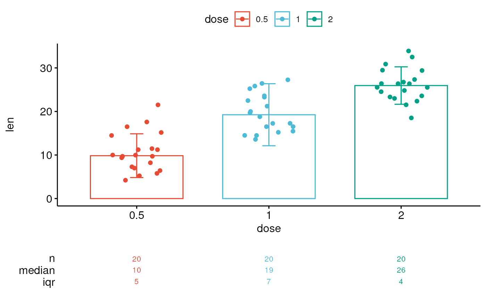

Create a ggplot with summary stats (n, median, mean, iqr) table under the plot. Read more: How to Create a Beautiful Plots in R with Summary Statistics Labels.
ggsummarytable( data, x, y, digits = 0, size = 3, color = "black", palette = NULL, facet.by = NULL, labeller = "label_value", position = "identity", ggtheme = theme_pubr(), ... ) ggsummarystats( data, x, y, summaries = c("n", "median", "iqr"), ggfunc = ggboxplot, color = "black", fill = "white", palette = NULL, facet.by = NULL, free.panels = FALSE, labeller = "label_value", heights = c(0.8, 0.2), digits = 0, table.font.size = 3, ggtheme = theme_pubr(), ... ) # S3 method for ggsummarystats print(x, heights = c(0.8, 0.2), ...) # S3 method for ggsummarystats_list print(x, heights = c(0.8, 0.2), legend = NULL, ...)
Arguments
| data | a data frame |
|---|---|
| x | a list of |
| y | character vector containing one or more variables to plot |
| digits | integer indicating the number of decimal places (round) to be used. |
| size | Numeric value (e.g.: size = 1). change the size of points and outlines. |
| color | outline color. |
| palette | the color palette to be used for coloring or filling by groups. Allowed values include "grey" for grey color palettes; brewer palettes e.g. "RdBu", "Blues", ...; or custom color palette e.g. c("blue", "red"); and scientific journal palettes from ggsci R package, e.g.: "npg", "aaas", "lancet", "jco", "ucscgb", "uchicago", "simpsons" and "rickandmorty". |
| facet.by | character vector, of length 1 or 2, specifying grouping variables for faceting the plot into multiple panels. Should be in the data. |
| labeller | Character vector. An alternative to the argument
|
| position | Position adjustment, either as a string, or the result of a call to a position adjustment function. |
| ggtheme | function, ggplot2 theme name. Default value is theme_pubr(). Allowed values include ggplot2 official themes: theme_gray(), theme_bw(), theme_minimal(), theme_classic(), theme_void(), .... |
| ... | other arguments passed to the function |
| summaries | summary stats to display in the table. Possible values are
those returned by the function |
| ggfunc | a ggpubr function, including: ggboxplot, ggviolin, ggdotplot,
ggbarplot, ggline, etc. Can be any other ggplot function that accepts the
following arguments |
| fill | fill color. |
| free.panels | logical. If TRUE, create free plot panels when the
argument |
| heights | a numeric vector of length 2, specifying the heights of the main and the summary table, respectively. |
| table.font.size | the summary table font size. |
| legend | character specifying legend position. Allowed values are one of c("top", "bottom", "left", "right", "none"). To remove the legend use legend = "none". |
Functions
ggsummarytable: Create a table of summary statsggsummarystats: Create a ggplot with a summary stat table under the plot.
Examples
# Data preparation #:::::::::::::::::::::::::::::::::::::::::::::::: data("ToothGrowth") df <- ToothGrowth df$dose <- as.factor(df$dose) # Add random QC column set.seed(123) qc <- rep(c("pass", "fail"), 30) df$qc <- as.factor(sample(qc, 60)) # Inspect the data head(df)#> len supp dose qc #> 1 4.2 VC 0.5 pass #> 2 11.5 VC 0.5 pass #> 3 7.3 VC 0.5 pass #> 4 5.8 VC 0.5 fail #> 5 6.4 VC 0.5 pass #> 6 10.0 VC 0.5 fail# Basic summary stats #:::::::::::::::::::::::::::::::::::::::::::::::: # Compute summary statistics summary.stats <- df %>% group_by(dose) %>% get_summary_stats(type = "common") summary.stats#> # A tibble: 3 x 11 #> dose variable n min max median iqr mean sd se ci #> <fct> <fct> <dbl> <dbl> <dbl> <dbl> <dbl> <dbl> <dbl> <dbl> <dbl> #> 1 0.5 len 20 4.2 21.5 9.85 5.03 10.6 4.5 1.01 2.11 #> 2 1 len 20 13.6 27.3 19.2 7.12 19.7 4.42 0.987 2.07 #> 3 2 len 20 18.5 33.9 26.0 4.3 26.1 3.77 0.844 1.77# Visualize summary table ggsummarytable( summary.stats, x = "dose", y = c("n", "median", "iqr"), ggtheme = theme_bw() )# Create plots with summary table under the plot #:::::::::::::::::::::::::::::::::::::::::::::::: # Basic plot ggsummarystats( df, x = "dose", y = "len", ggfunc = ggboxplot, add = "jitter" )# Color by groups ggsummarystats( df, x = "dose", y = "len", ggfunc = ggboxplot, add = "jitter", color = "dose", palette = "npg" )# Create a barplot ggsummarystats( df, x = "dose", y = "len", ggfunc = ggbarplot, add = c("jitter", "median_iqr"), color = "dose", palette = "npg" )# Facet #:::::::::::::::::::::::::::::::::::::::::::::::: # Specify free.panels = TRUE for free panels ggsummarystats( df, x = "dose", y = "len", ggfunc = ggboxplot, add = "jitter", color = "dose", palette = "npg", facet.by = c("supp", "qc"), labeller = "label_both" )#> Warning: production de NaN